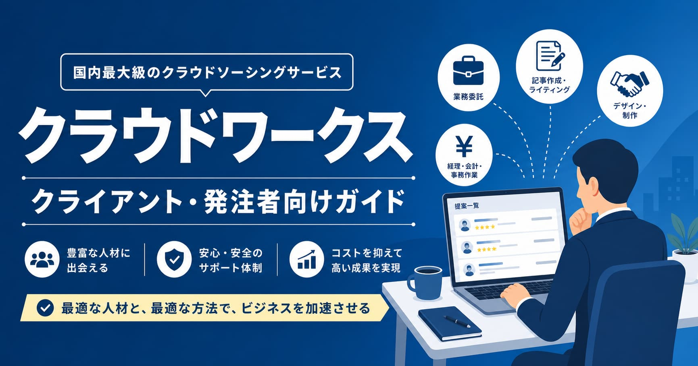

副業・フリーランスクラウドワークスで外注する方法｜発注者登録から受発注まで完全ガイド
2026年5月 更新
「LPを作ってほしい、ライティングを外注したい」——けど、フリーランサーをどこで探せばいいかわからない方におすすめなのがクラウドワークスです。発注手数料無料で低リスクに外注できるのが最大のメリット。
発注の流れ
- クラウドワークスに無料登録（クライアント登録）
- 仕事の内容・予算・期限を設定して公募
- 応募その中からワーカーを選択
- 渡場資料を共有して作業依頼
- 納品確認→報酬支払
手数料について
クライアント側の仕事発注におけるシステム使用料は無料です。ワーカーに支払った報酬の一部がシステム利用料としてクラウドワークスへ支払われる仕組みで、発注者の追加負担はありません。
「LP制作を外注したら、予算内で満足度の高い成果が届いた。記載内容も胞裁で尾引き対応もできた。」